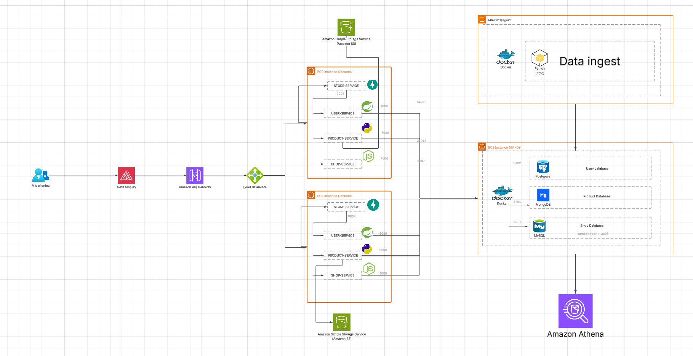

CloudFormation
Declara ALB, EC2, Security Groups, buckets S3 y Amplify en un solo template para que el despliegue sea repetible.
OpenStore Infrastructure
Esta página muestra el modelo entidad-relación y la arquitectura de solución propuesta, junto con las decisiones de infraestructura y los atributos principales que maneja cada base de datos.
Diagrama ER


Arquitectura AWS
Declara ALB, EC2, Security Groups, buckets S3 y Amplify en un solo template para que el despliegue sea repetible.
Las APIs viven en instancias EC2 detrás de un Application Load Balancer que expone la entrada pública por HTTP y enruta el tráfico.
Se usa para guardar imágenes de productos y archivos analíticos producidos por la ingesta, además de servir como origen para Athena.
Publica el frontend desde la carpeta frontend y automatiza el build y el
deploy desde el repositorio.
Base de datos
| Servicio | Entidad / colección | Atributos principales |
|---|---|---|
| user-service | users | id, name, email, phone_number, role, subscription, shop_id, password, enabled, email_verified, token_version, created_at, updated_at |
| shop-service | Shop | id, name, owner_id, phone_number |
| shop-service | Membership | id, user_id, role, shop_id |
| shop-service | ShopTheme | id, shopId, themeKey, config, createdAt, updatedAt |
| product-service | products | id/_id, name, price, description, imageUrl, availability, shopId, createdAt |
Lectura del modelo
Un OWNER puede tener una o varias tiendas. Cada tienda mantiene su owner, y las membresías enlazan usuarios con roles dentro de una shop concreta.
Cada producto pertenece a una sola tienda. Eso hace posible escalar catálogos por shop sin mezclar inventario ni romper el aislamiento de dominios.